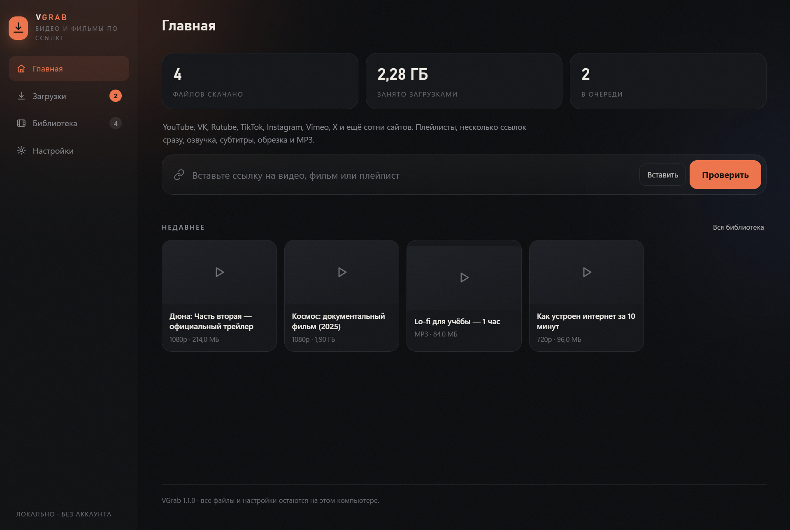
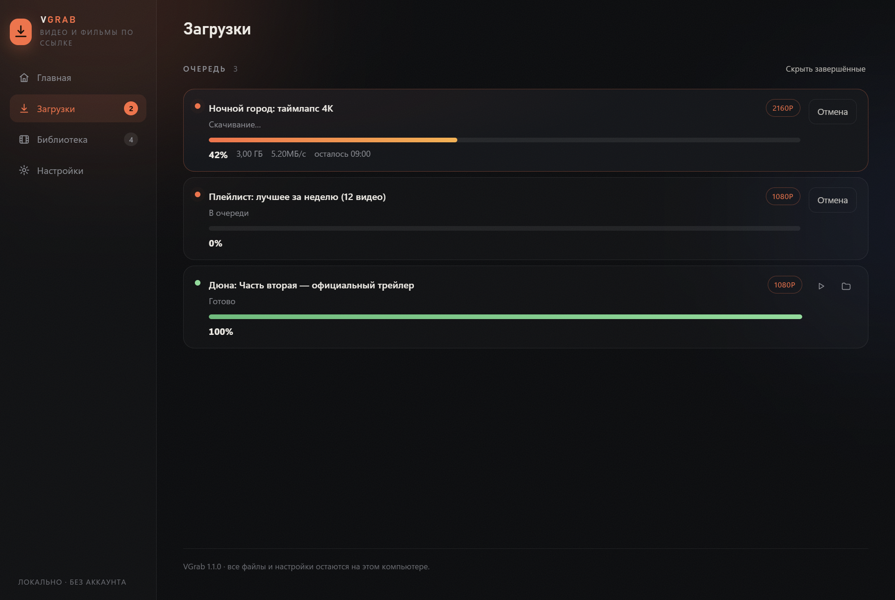

Сотни сайтов
YouTube, VK, Rutube, TikTok, Instagram, Vimeo, X и другие. Если площадка отдаёт видео, VGrab его заберёт.
бесплатно · без аккаунта · без рекламы
VGrab скачивает с YouTube, VK, Rutube, TikTok и ещё сотен сайтов. Вставили ссылку, выбрали качество, забрали файл. Плейлисты, озвучка, субтитры, обрезка и MP3 уже внутри.
Всё работает локально: файлы и настройки не покидают ваш компьютер.
01 · возможности
YouTube, VK, Rutube, TikTok, Instagram, Vimeo, X и другие. Если площадка отдаёт видео, VGrab его заберёт.
Вставьте несколько ссылок сразу или целый плейлист. VGrab качает по очереди и показывает прогресс каждого файла.
Выбор озвучки, субтитры отдельным файлом .srt, качество до 4K. Для фильмов с YouTube, VK и Rutube.
Нужен отрезок с 1:20 до 2:45? Пожалуйста. MP4, WebM, MKV, только звук в MP3 или видео без звука.
Никаких аккаунтов, облаков и телеметрии. Программа работает только на вашем ПК, история и настройки хранятся локально.
Движок yt-dlp обновляется прямо из приложения в один клик, чтобы новые сайты и форматы работали без проблем.
02 · интерфейс
Главная со счётчиками и недавними файлами, очередь загрузок, библиотека и настройки. Всё под рукой.


03 · как это работает
Одну, несколько или плейлист. VGrab сам найдёт название, качество и длительность.
От 360p до 4K, только звук MP3, озвучка и субтитры для фильмов, обрезка по времени.
Файл появится в выбранной папке. Прогресс, скорость и уведомления уже работают.
04 · вопросы
Да. VGrab бесплатен, без рекламы, регистрации и пробных периодов. Скачали и пользуетесь.
YouTube, VK, Rutube, TikTok, Instagram, Vimeo, X и сотни других площадок через движок yt-dlp. Если сайт отдаёт видео без защиты, скорее всего всё получится.
Эти сервисы защищают видео DRM-шифрованием. VGrab не обходит защиту и работает только с открытыми источниками: YouTube, VK, Rutube и другими площадками без DRM.
В папку загрузок, которую вы выберете в настройках. История, настройки и сами файлы хранятся только на вашем компьютере.
Приложение распространяется без цифровой подписи, поэтому SmartScreen может перестраховаться. Нажмите «Подробнее», затем «Выполнить в любом случае». Это нормально для бесплатных портативных программ.
Нет. VGrab — один exe-файл: запустили и работает. Можно носить на флешке. Внутри уже есть всё необходимое, включая yt-dlp и ffmpeg.
Пока только Windows 10 и 11 (64-bit).
Один файл. Запустили, вставили ссылку, забрали видео.
Скачать для Windows